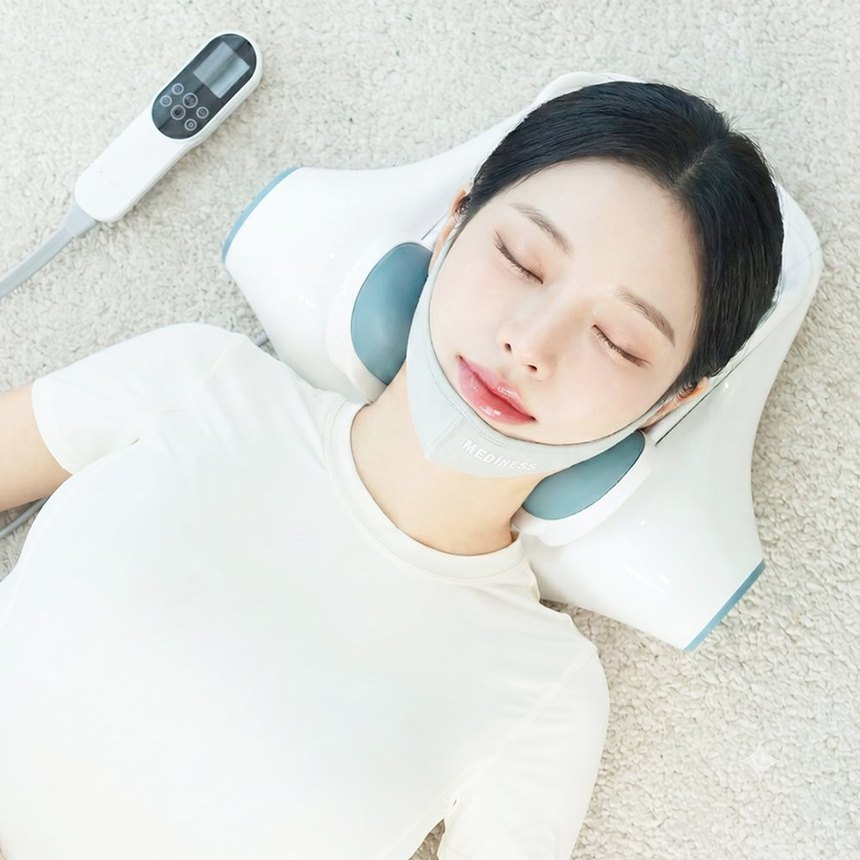
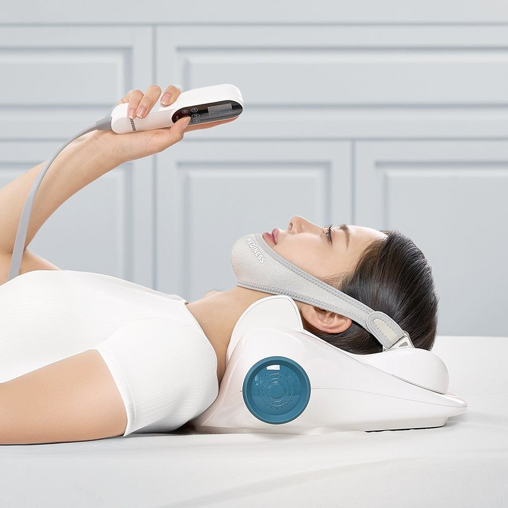
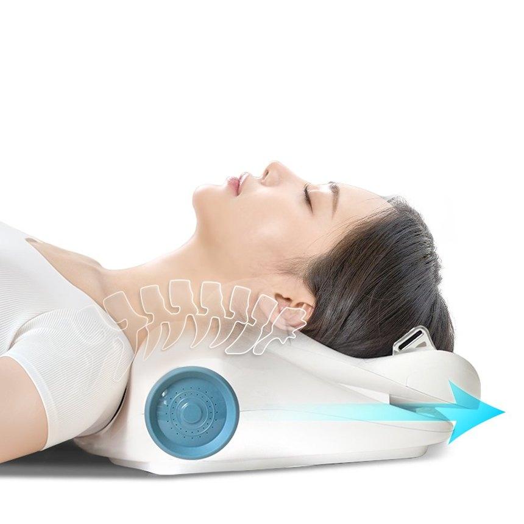
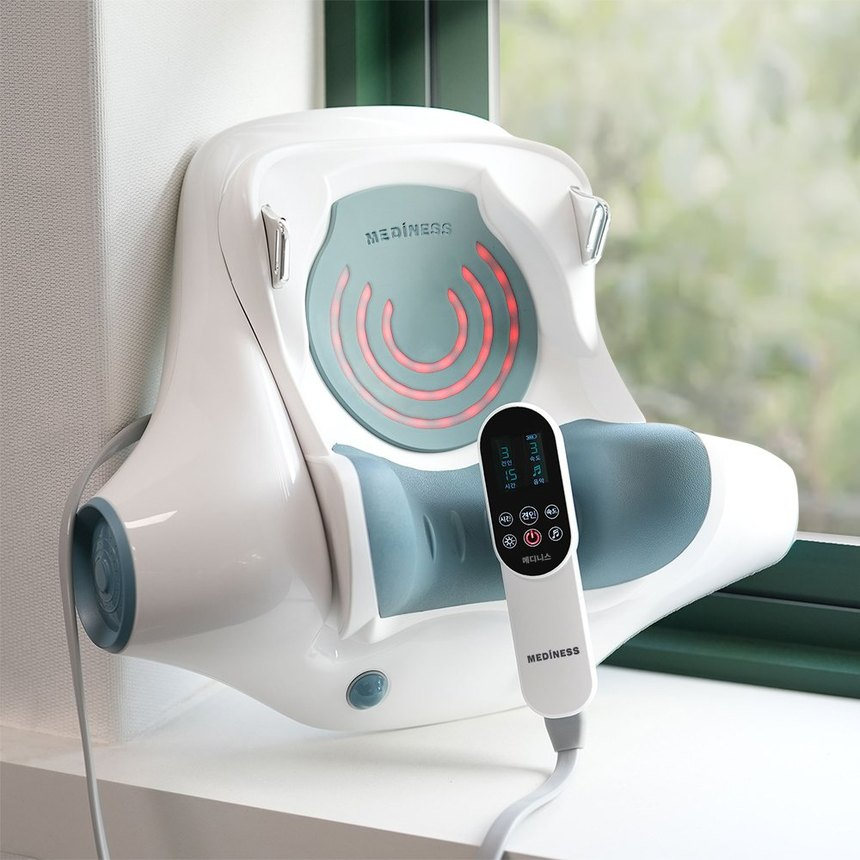
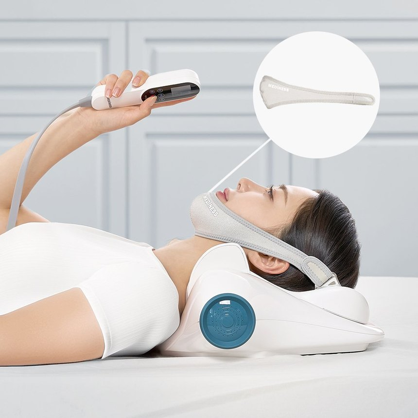

Mediness Neckpeel Review: Overview
This Mediness Neckpeel review looks at a Korean electric neck traction device built for people who spend all day hunched over a desk or a phone. The Neckpeel MDM-3577 is a motorised head rest that you lie on; at the touch of a remote it slides your head away from your shoulders to stretch the neck by 3, 4 or 5 cm, for up to 15 minutes.
The Mediness listing on Naver Shopping Connect that we checked was priced at 398,000 KRW when collected on October 27, 2026. We checked the model, certification and specs against the Korean MFDS medical device record, the retailer product notice and owner reviews. We did not test it on our own necks for weeks, so this review is based on the maker's data and owner reports. It is not medical advice.
"A real motorised traction device you can use lying on your bedroom floor. Start low, stay short and talk to a doctor if you have a diagnosed neck problem."

How It Works: Lying-Down Motorised Traction
You place the Neckpeel on a flat floor or firm mattress, lie down with the back of your head in the cradle and, if you like, fasten the soft chin band to the two side holders. A long press on the remote turns it on. The head rest then moves smoothly away from the body and back, so the stretch comes from the motor rather than from pulling with your hands or pumping up an air collar.
You choose the traction distance (level 1 = 3 cm, level 2 = 4 cm, level 3 = 5 cm), the speed and the time on the touch remote. There is also an LED light panel and built-in music, both of which can be switched off. Mediness says the chin band is optional and that the device works without it. When the session ends, wait until the head rest has fully stopped before you sit up.


Korean Medical Device Certification
Unlike most neck "stretchers" sold online, the MDM-3577 is certified in Korea as a Class 2 powered orthopaedic traction device (전동식 정형용 견인장치), certification No. 제인 25-4183, dated March 10, 2025. Its registered intended use is traction of the cervical spine for the treatment of conditions such as disc herniation and degenerative stenosis. That is the Korean regulator's wording, not a promise from us.
Two cautions. First, a Korean certification is not an FDA clearance, so it does not mean the device is approved in the U.S. Second, traction is not right for everyone. If you have a neck injury, arthritis, osteoporosis, a recent operation or symptoms such as arm numbness, speak to a doctor or physiotherapist before you use any traction device.
Design, Battery and Everyday Use
The body is glossy white with blue-grey cushions and measures about 40 × 34 × 16.5 cm, at 2.6 kg. A built-in 11.1V 2,200mAh battery means you can use it without the power cord in the way; a light by the charging port blinks red while charging and turns blue when full. The adapter takes 100–240V input, so it works with overseas voltage, although you would need a plug adapter.
Owner reviews say it is easy to set up and quiet, and that the stretch feels "a little uncomfortable at first, then you get used to it". Several say the shoulder edge of the cradle feels hard, that they turn the music off, and that it is too bulky to call a travel gadget. It is best kept in one spot at home and used as a daily 10–15 minute routine.


Key Specs
| Spec | Mediness Neckpeel MDM-3577 |
|---|---|
| Type | Electric (motorised) cervical traction device, used lying down |
| Korean certification | MFDS Class 2 powered orthopaedic traction device, No. 제인 25-4183 (March 10, 2025) |
| Traction distance | Level 1: 3 cm · Level 2: 4 cm · Level 3: 5 cm |
| Controls | Corded touch remote: traction level, speed, time, LED, music |
| Session length | Up to 15 minutes |
| Battery | Built-in 11.1V 2,200mAh rechargeable (18650 3S) |
| Power | Adapter AC 100–240V, 50/60Hz in; DC 15V 2A out; 30W |
| Size / weight | 399.9 × 337.6 × 164.5 mm / about 2.6 kg |
| In the box | Main unit, chin band, adapter, user manual |
| Made in / warranty | South Korea / 1 year free service from purchase |
| Released | 2025 |
| Korean price | 398,000 KRW on Naver Shopping Connect (collected Oct 27, 2026) |
Specs come from the Korean MFDS medical device record, the retailer product notice and owner unboxing reviews; the price comes from the Naver Shopping Connect listing. Mediness product photos, unmodified.
How It Compares
| Mediness Neckpeel MDM-3577 (this) | Inflatable neck traction collar | Foam neck stretcher pillow | |
|---|---|---|---|
| How it stretches | Motor moves the head rest 3–5 cm | You pump air to lift the head | Passive curve, no movement |
| Position | Lying down | Sitting or lying | Lying down |
| Adjustable | Distance, speed, time | Air pressure only | No |
| Korean medical certification | Yes, Class 2 | Some models | Usually no |
| Typical price | 398,000 KRW | 20,000–60,000 KRW | 10,000–40,000 KRW |
Pros & Cons
| Pros | Cons |
|---|---|
| Motorised traction with 3, 4 or 5 cm settings | Expensive compared with air collars and foam stretchers |
| Certified in Korea as a Class 2 medical traction device | Not FDA cleared; Korean remote labels and service |
| Battery powered, so no cord in the way while lying down | 2.6 kg and bulky; not really a travel device |
| Simple touch remote with speed and time control | Some owners find the shoulder edge hard |
| Made in Korea with a 1-year warranty | Not suitable for everyone; check with a doctor first |
Who It Suits (and Who Should Skip It)
- Yes: Desk workers and students with stiff necks from long hours at a screen who want a short daily stretch at home.
- Yes: People who already use neck traction with a physiotherapist and want a home device, with their therapist's OK.
- Yes: Buyers in Korea who want a certified device rather than an uncertified stretching gadget.
- No: Anyone with a recent neck injury, operation, severe arthritis or osteoporosis, unless a doctor says it is fine.
- No: Travellers wanting something small for a suitcase, or buyers outside Korea who need local service; look at devices sold locally.
Mediness Neckpeel FAQ
What is the Mediness Neckpeel MDM-3577?
It is a Korean electric neck traction device from Mediness (메디니스). You lie on your back with your head on its motorised head rest, and the rest slides away from your shoulders to gently stretch the neck by 3, 4 or 5 cm. It is controlled by a corded remote, runs on a built-in rechargeable battery and weighs about 2.6 kg.
Is the Neckpeel a medical device?
In Korea, yes. The MFDS (Ministry of Food and Drug Safety) record lists it as a Class 2 powered orthopaedic traction device, certification No. 제인 25-4183 (March 10, 2025), model MDM-3577. That Korean approval does not make it an FDA-cleared device in the U.S., and this review is not medical advice.
How long should I use the Neckpeel each session?
The maker's guidance is up to 15 minutes per session, starting at the lowest traction level (3 cm) and a slow speed. Stop immediately if you feel pain, numbness or dizziness, and speak to a doctor or physiotherapist first if you have a diagnosed neck condition.
What is the difference between the MDM-3577 and the MDM-3488?
They look almost the same. Korean owners and sellers describe the MDM-3577 as the certified medical traction model and the MDM-3488 as a cheaper neck-and-shoulder stretching massager. Check the model number on the listing before you buy.
Can I buy the Neckpeel in the U.S.?
It is sold in Korea through Naver and Korean electronics retailers, with a Korean remote and Korean after-sales service. The Amazon button on this page searches for similar electric neck traction devices sold in the U.S.
Electric Neck Traction Device (Lying-Down Type)
The Neckpeel is sold in Korea with a Korean remote. Similar electric cervical traction devices are sold in the U.S. under other brands; compare current listings on Amazon and check with your doctor first.